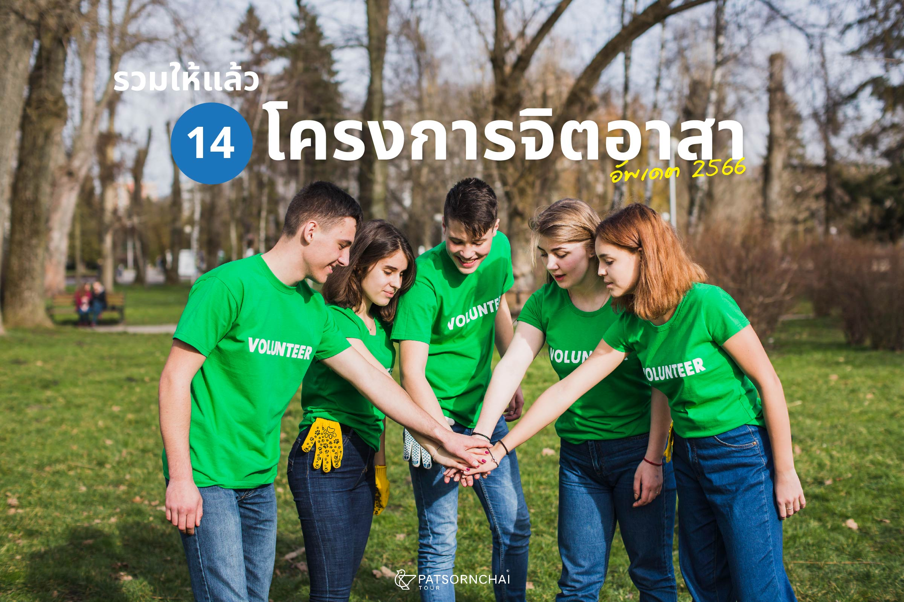
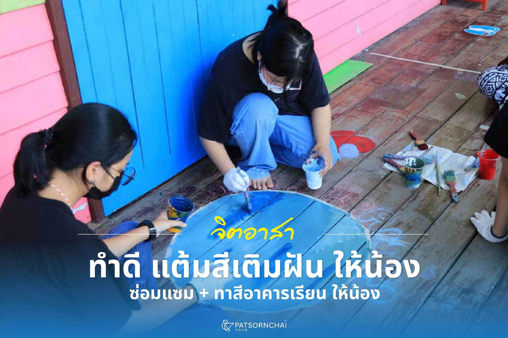
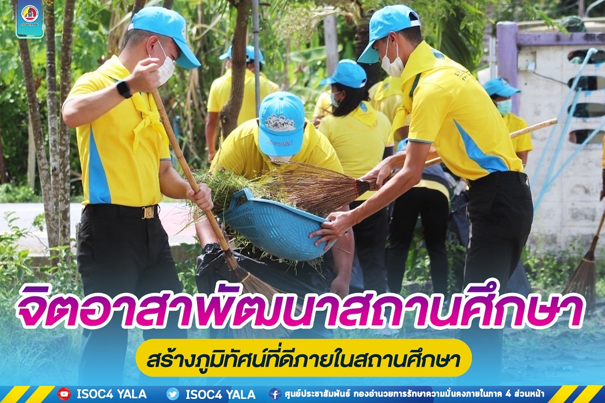

เข้าร่วมกิจกรรมจิตอาสาวิทยาลัยเทคนิคสระบุรี
การทำงานช่วยเหลือสังคมโดยไม่หวังสิ่งตอบแทนครอบคลุมหลากหลายรูปแบบทั้งการพัฒนาชุมชน เช่น การปลูกป่า เก็บขยะ จัดระเบียบพื้นที่ การช่วยเหลือด้านสังคม เช่น บริจาคสิ่งของ เยี่ยมผู้สูงอายุ การอนุรักษ์ธรรมชาติ เช่น ปล่อยเต่า ปลูกต้นไม้ และกิจกรรมเฉพาะกิจ เช่น การช่วยเหลือในงานพระราชพิธีหรือช่วงภัยพิบัติ.


